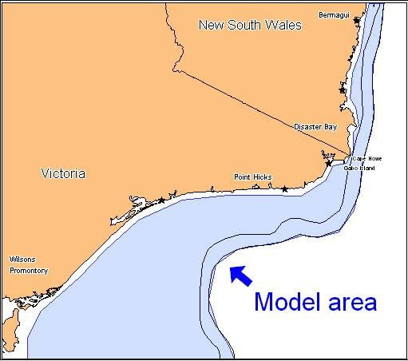

Model name
EwE East Bass Strait
Situated on the southeast corner of mainland Australia and extends from Wilsons Promontory on the southern Victorian coast to Bermagui on the NSW coast (Fig 1). The model includes the area of the shelf and slope to a depth of 700m, where there is a major change in fish community composition. The shelf area within a depth range of 25 to 200 m is 26,150 km2 while the slope from 200 to 700 m is 4,113 km2, a total of 30,263 km2.
Contacts
Cathy Bulman ( cathy.bulman@csiro.au cathy.bulman@gmail.com )
Spatial scale forcing
Ecosim run usually not requiring spatial forcing. However a preliminary spatial model at ¼ degree is partially developed.

Situated on the southeast corner of mainland Australia and includes the area of the shelf and slope to a depth of 700m.. The shelf area within a depth range of 25 to 200 m is 26,150 km2 while the slope from 200 to 700 m is 4,113 km2, a total of 30,263 km2.
Levels of gear disaggregation
Commonwealth trawl, Danish Seine, NSW trawl, Victorian trawl, non-trawl nets, line fisheries (trap fisheries, scallop, squid, tuna longline and recreational)
Levels of functional group disaggregation
59 groups: species aggregated based upon commercial fishery, life history traits and ecology e.g. size and growth, preferred depth and trophic function. Some species were singled out due to their importance in the fishery. Two detritus groups (including discards)
Toothed whale, Baleen whale, Seals, Seabirds, Penguins, Tuna/billfish, Pelagic sharks, Demersal sharks, Rays, Warehous, Redbait, Redfish, Ling, Dories, Jack mackerel, Jackass morwong, Flathead, Gemfish, ShOceanPerch, Chinaman leatherjacket, Cucumberfish, Whiting, Cardinal, ShSmInvertFeeder, ShSmPredator, ShMedInvertFeeder, ShMedPredator, ShLInvertFeeder, ShLPredator, Blue-eye trevalla, Blue grenadier, SlopeOceanPerch, Deepsea Cod, Oreos, SlopeSmInvertFeeder, SlopeSmPredator, SlopeMInverFeeder, SlopeMPredator, SlopeLInvertFeeder, SlopeLPredator, PelSmInvertFeeder, PelMInvertFeeder, PelMPredator, PelLInvertFeeder, PelLPredator, Mesopelagics, Squid, Commercial Prawns, Macrobenthos, Megabenthos, Polychaeta, Gelatinous nekton, Euphausiids ,L zooplankton, Sm zooplankton, Primary producers, Benthic producer, Detritus, Discards
Spatial grid-cell allocation method
Not applicable in this version. However a spatial model partially developed that allocates effort to grid squares based on fishing data.
Fishing mortality rate equation
Fishing effort was used to force the model.
Selectivity (size,age,species)
Not applicable. Selectivity was used in the calculation of abundance from the original survey catch data.
Model calibration
The model was calibrated by finding feeding and vulnerability parameters that reduced the least sums of squares difference between the model-predictions of biomass and catch, and the time series of CPUE and catch over the period (1994-2003), while annual fishery effort values were used to derive fishing mortalities.
Catchability and Creep (yearly rate of change catchability) Estimates
N/A
Further details on calibration
N/A
Statistical metrics
The original model was calibrated by reducing the least sums of squares difference between the model-predictions of biomass and catch, and the time series of CPUE and catch over the period (1994-2003 manually.
Statistical results (summary)
[Please provide a summary of the metrics and results associated with your model calibration - E.g. RMSE with observed catches and any other process-based or theoretical criteria used to calibrate the model, comparison of modelled biomass, growth rates, P"B ratios etc]
N/A
Model changes or improvements(s) made as a result of calibration
N/A
ADDITIONAL DETAILS FOR REGIONAL MODELS ONLY:
Downscaling method
Catch data from Commonwealth, Victorian and NSW state logbooks for the model domain were collated into an annual catch, discard and effort time series for the years from 1985-2002 for each fishery(or aggregation of gear) . Data from the Integrated Scientific Monitoring Program was used to extrapolate the catches and discards of non-target species from the commercial trawl catches. From the appropriate data for each fleet or fishery, we calculated the annual catch and discard rates (t km-2) for each functional group or species in the model. The 1994 data set was used to initialise the Ecopath model and data for the following years were entered as time series .
Effort has since been updated from the original up to 2016 at least for state fisheries and to2019 for Commonwealth fisheries where possible. Some fisheries have little or no current effort..
The "base" year range of the regional model
1994-2002